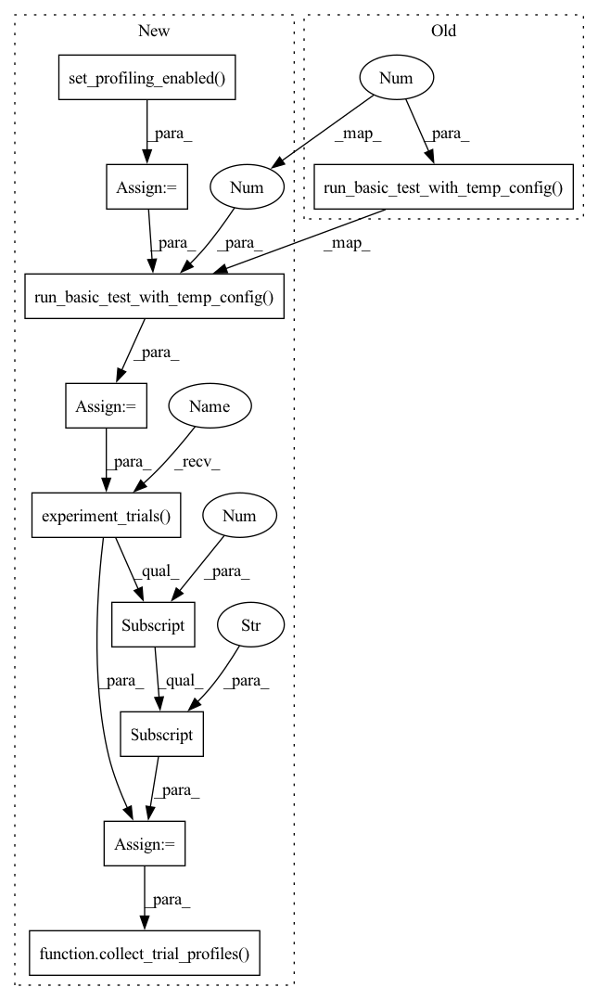

Pattern ID :1440

Before Change
config = conf.set_slots_per_trial(config, 8)
config = conf.set_tf2_image(config)
exp.run_basic_test_with_temp_config(config, conf.gan_examples_path("dcgan_tf_keras"), 1)
After Change
config = conf.set_min_validation_period(config, {"batches": 200})
config = conf.set_slots_per_trial(config, 8)
config = conf.set_tf2_image(config)
config = conf.set_profiling_enabled(config)
exp_id = exp.run_basic_test_with_temp_config(
config, conf.gan_examples_path("dcgan_tf_keras"), 1
)
trial_id = exp.experiment_trials(exp_id)[0]["id"]
collect_trial_profiles(trial_id)
In pattern: SUPERPATTERN
Frequency: 4
Non-data size: 10
Instances
Fragment ID: 6697598
Project Name: determined-ai/determined
Commit Name: c12cd203f5e78ad3c6af6d4f90a4c3807e118ce4
Time: 2021-08-17
Author: 83614683+azhou-determined@users.noreply.github.com
File Name: e2e_tests/tests/experiment/test_tf_keras.py
M Class Name: AnonimousClass
N Class Name: AnonimousClass
M Method Name: run_tf_keras_dcgan_example(1)
N Method Name: run_tf_keras_dcgan_example(0)
M Parent Class:
N Parent Class:
M File Name: e2e_tests/tests/experiment/test_tf_keras.py
N File Name: e2e_tests/tests/experiment/test_tf_keras.py
M Start Line: 171
M End Line: 173
N Start Line: 195
N End Line: 207
'>
Before Change
config = conf.load_config(conf.fixtures_path("pytorch_amp/" + api_style + "_amp.yaml"))
config = conf.set_max_length(config, {"batches": 200})
exp.run_basic_test_with_temp_config(config, conf.fixtures_path("pytorch_amp"), 1)
@pytest.mark.parallel // type: ignore
def test_pytorch_cifar10_parallel() -> None:
After Change
) -> None:
config = conf.load_config(conf.fixtures_path("pytorch_amp/" + api_style + "_amp.yaml"))
config = conf.set_max_length(config, {"batches": 200})
config = conf.set_profiling_enabled(config)
experiment_id = exp.run_basic_test_with_temp_config(
config, conf.fixtures_path("pytorch_amp"), 1
)
trial_id = exp.experiment_trials(experiment_id)[0]["id"]
collect_trial_profiles(trial_id)
@pytest.mark.parallel // type: ignore
def test_pytorch_cifar10_parallel(collect_trial_profiles: Callable[[int], None]) -> None:
'>
Fragment ID: 6697596
Project Name: determined-ai/determined
Commit Name: c12cd203f5e78ad3c6af6d4f90a4c3807e118ce4
Time: 2021-08-17
Author: 83614683+azhou-determined@users.noreply.github.com
File Name: e2e_tests/tests/experiment/test_pytorch.py
M Class Name: AnonimousClass
N Class Name: AnonimousClass
M Method Name: test_pytorch_const_with_amp(2)
N Method Name: test_pytorch_const_with_amp(1)
M Parent Class:
N Parent Class:
M File Name: e2e_tests/tests/experiment/test_pytorch.py
N File Name: e2e_tests/tests/experiment/test_pytorch.py
M Start Line: 94
M End Line: 98
N Start Line: 106
N End Line: 116
'>
Before Change
else:
config = conf.set_s3_data_layer(config)
exp.run_basic_test_with_temp_config(
config, conf.features_examples_path("data_layer_mnist_tf_keras"), 1
)
@pytest.mark.parallel // type: ignore
def run_tf_keras_dcgan_example() -> None:
After Change
config = conf.set_max_length(config, {"batches": 200})
config = conf.set_slots_per_trial(config, 8)
config = conf.set_tf2_image(config) if tf2 else conf.set_tf1_image(config)
config = conf.set_profiling_enabled(config)
if storage_type == "lfs":
config = conf.set_shared_fs_data_layer(config)
else:
config = conf.set_s3_data_layer(config)
exp_id = exp.run_basic_test_with_temp_config(
config, conf.features_examples_path("data_layer_mnist_tf_keras"), 1
)
trial_id = exp.experiment_trials(exp_id)[0]["id"]
collect_trial_profiles(trial_id)
@pytest.mark.parallel // type: ignore
def run_tf_keras_dcgan_example(collect_trial_profiles: Callable[[int], None]) -> None:
'>
Fragment ID: 6697597
Project Name: determined-ai/determined
Commit Name: c12cd203f5e78ad3c6af6d4f90a4c3807e118ce4
Time: 2021-08-17
Author: 83614683+azhou-determined@users.noreply.github.com
File Name: e2e_tests/tests/experiment/test_tf_keras.py
M Class Name: AnonimousClass
N Class Name: AnonimousClass
M Method Name: test_tf_keras_mnist_data_layer_parallel(3)
N Method Name: test_tf_keras_mnist_data_layer_parallel(3)
M Parent Class:
N Parent Class:
M File Name: e2e_tests/tests/experiment/test_tf_keras.py
N File Name: e2e_tests/tests/experiment/test_tf_keras.py
M Start Line: 156
M End Line: 162
N Start Line: 178
N End Line: 191
'>
Before Change
}
config = conf.set_pod_spec(config, pod_spec)
exp.run_basic_test_with_temp_config(config, conf.tutorials_path("mnist_pytorch"), 1)
@pytest.mark.e2e_cpu // type: ignore
def test_pytorch_load() -> None:
After Change
) -> None:
config = conf.load_config(conf.fixtures_path("mnist_pytorch/const-pytorch11.yaml"))
config = conf.set_aggregation_frequency(config, aggregation_frequency)
config = conf.set_profiling_enabled(config)
if using_k8s:
pod_spec = {
"metadata": {"labels": {"ci": "testing"}},
"spec": {
"containers": [
{
"name": "determined-container",
"volumeMounts": [{"name": "temp1", "mountPath": "/random"}],
}
],
"volumes": [{"name": "temp1", "emptyDir": {}}],
},
}
config = conf.set_pod_spec(config, pod_spec)
experiment_id = exp.run_basic_test_with_temp_config(
config, conf.tutorials_path("mnist_pytorch"), 1
)
trial_id = exp.experiment_trials(experiment_id)[0]["id"]
collect_trial_profiles(trial_id)
@pytest.mark.e2e_cpu // type: ignore
def test_pytorch_load(collect_trial_profiles: Callable[[int], None]) -> None:
'>
Fragment ID: 6697595
Project Name: determined-ai/determined
Commit Name: c12cd203f5e78ad3c6af6d4f90a4c3807e118ce4
Time: 2021-08-17
Author: 83614683+azhou-determined@users.noreply.github.com
File Name: e2e_tests/tests/experiment/test_pytorch.py
M Class Name: AnonimousClass
N Class Name: AnonimousClass
M Method Name: test_pytorch_11_const(3)
N Method Name: test_pytorch_11_const(2)
M Parent Class:
N Parent Class:
M File Name: e2e_tests/tests/experiment/test_pytorch.py
N File Name: e2e_tests/tests/experiment/test_pytorch.py
M Start Line: 14
M End Line: 31
N Start Line: 14
N End Line: 39